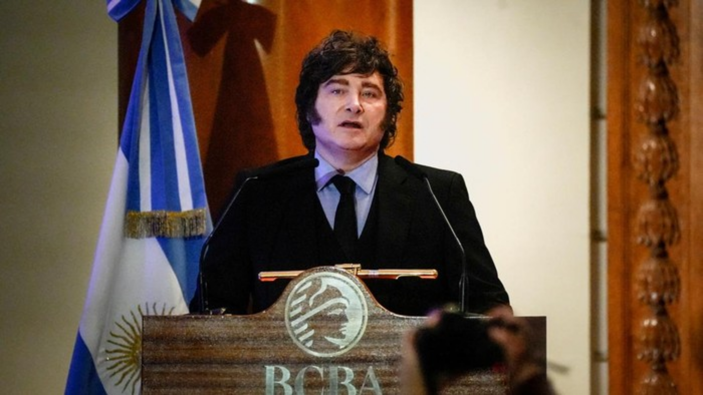
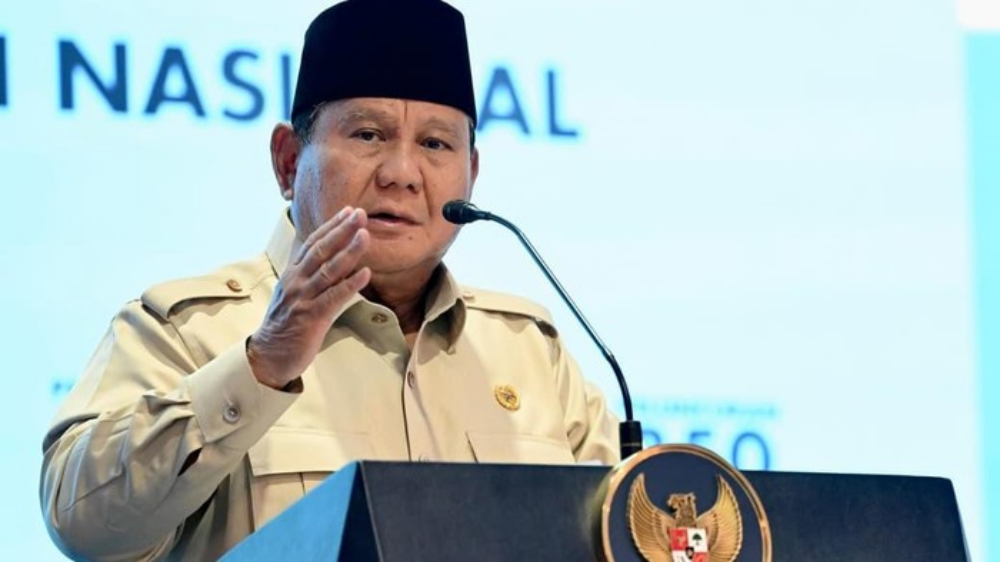
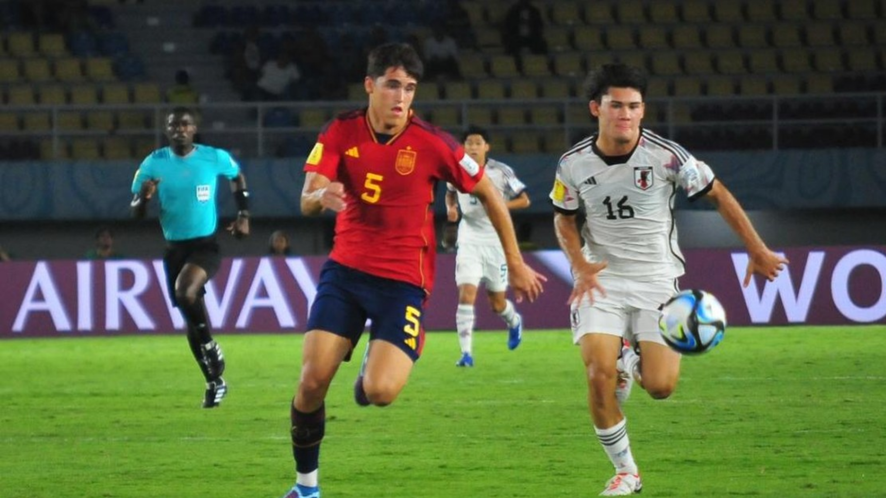

Novi Christiastuti - TenNews
Senin, 20 Juli 2026 12:34 WIB

Buenos Aires - Presiden Argentina, Javier Milei mengumumkan hari libur nasional usai timnas sepak bola negaranya gagal menjadi juara Piala Dunia 2026. Milei berterima kasih kepada timnas Argentina, yang disebutnya telah "berjuang habis-habisan", meskipun kalah dari Spanyol di final Piala Dunia. Pengumuman ini, seperti dilansir Mirror.co.uk, Senin (20/7/2026), disampaikan Milei dalam pernyataan via media sosial X setelah timnas Argentina kalah dari Spanyol dengan skor 0-1 dalam pertandingan final yang digelar di MetLife Stadium, New Jersey, Amerika Serikat (AS), pada Minggu (19/7) waktu setempat. Beberapa jam setelah Spanyol mengangkat trofi Piala Dunia, Milei mengumumkan bahwa seluruh warga Argentina akan menikmati hari libur nasional, meskipun negaranya gagal menjadi juara bertahan.
Tim TenCom - TenNews
Senin, 20 Juli 2026 12:59 WIB

Jakarta - Pengacara mantan Jampidsus Febrie Adriansyah, Hotman Paris Hutapea, membawa-bawa nama Presiden Prabowo Subianto saat membela kliennya di Kejagung. Istana Kepresidenan dan Partai Gerindra meminta Hotman tak mengaitkan kasus Febrie dengan Prabowo. Mensesneg Prasetyo Hadi meminta Hotman Paris tidak membawa nama Prabowo saat membela kliennya tersebut. Pras mengatakan tiga kasus dugaan korupsi yang melibatkan Febrie merupakan murni persoalan hukum. "Ya, itu kan kita kembalikan ke proses hukum ya. Jangan dikait-kaitkan juga dengan Bapak Presiden," kata Prasetyo usai rapat bersama pimpinan DPR di gedung DPR kompleks parlemen, Senayan, Jakarta, Senin (20/7/2026).
Pras mengatakan kasus hukum harus ditangani sesuai mekanisme hukum. Ketua OKK DPP Gerindra itu mengatakan pemeriksaan pejabat tidak perlu izin dari Presiden.
Bayu Baskoro - TenNews
Senin, 20 Juli 2026 12:40 WIB

Senin, 20 Jul 2026 12:40 WIB New Jersey - Bek Spanyol Pau Cubarsi meraih gelar Pemain Muda Terbaik Piala Dunia 2026. Usut punya usut, dia pernah bermain di Indonesia dalam turnamen kategori usia. Timnas Spanyol keluar sebagai kampiun Piala Dunia. Tim Matador juara setelah mengalahkan Argentina 1-0 di New York New Jersey Stadium, Senin (20/7/2026) dini hari WIB. Kedua tim bermain imbang tanpa gol selama 90 menit. Spanyol baru bisa memecah kebuntuan di babak tambahan lewat gol semata wayang Ferran Torres.
Pau Cubarsi tak tergantikan di laga Spanyol vs Argentina. Bek berusia 19 tahun ini jadi pemain yang paling sering menyentuh bola (139 kali), sapuan terbanyak (6 kali), hingga memberikan operan akurat sukses (121 kali).
Cubarsi juga bertanggung jawab atas diusirnya Enzo Fernandez pada injury time babak kedua. Dia dilanggar gelandang Argentina itu hingga terpelanting, membuat wasit mengeluarkan kartu kuning kedua. Performa gemilang Cubarsi membawanya memenangkan penghargaan Pemain Muda Terbaik Piala Dunia 2026. Bek Barcelona ini memang selalu tampil penuh bersama Timnas Spanyol sejak fase grup hingga final. Squawka mencatat, Cubarsi menjadi pemain asal Spanyol pertama yang memenangkan penghargaan Pemain Muda Terbaik Piala Dunia. Dia adalah bek pertama yang meraih gelar individu itu setelah Manuel Amoros (Prancis) tahun 1982.
Rahmat Khairurizqi - TenNews
Senin, 20 Juli 2026 12:06 WIB
Jakarta - Di tengah derasnya arus globalisasi dan perkembangan teknologi digital, makna nasionalisme terus mengalami dinamika. Generasi muda kini dihadapkan pada berbagai tantangan, mulai dari perubahan sosial, perkembangan teknologi, hingga ketidakpastian ekonomi yang menuntut kemampuan beradaptasi tanpa kehilangan jati diri sebagai bangsa Indonesia. Di sisi lain, ruang dialog yang mampu mempertemukan berbagai perspektif untuk membahas isu-isu kebangsaan secara terbuka masih menjadi kebutuhan. Tak hanya sebagai wadah bertukar gagasan, forum semacam ini juga diharapkan dapat melahirkan berbagai pemikiran baru yang relevan dengan tantangan zaman. Berangkat dari semangat tersebut, DPD PDI Perjuangan Jawa Timur bersama detikcom akan menghadirkan RedTalks, sebuah forum dialog publik yang mengusung tema 'Indonesia Punya Kita: Nasionalisme Tanpa Batas Generasi'.
Forum ini dirancang sebagai ruang diskusi yang mempertemukan mahasiswa, aktivis, akademisi, budayawan, tokoh pemuda, hingga berbagai elemen masyarakat untuk menyampaikan gagasan, kritik, maupun otokritik secara terbuka dan konstruktif. Melalui dialog lintas generasi, RedTalks diharapkan menjadi wadah lahirnya ide-ide segar sekaligus refleksi mengenai perjalanan bangsa Indonesia di tengah berbagai tantangan masa kini. Tak hanya membahas makna nasionalisme di era digital, forum ini juga akan mengangkat berbagai isu yang dekat dengan kehidupan generasi muda. Mulai dari pentingnya membangun kemandirian dan daya saing di tengah ketidakpastian ekonomi, dinamika politik dan demokrasi di Indonesia, hingga peran generasi muda dalam menghadirkan perubahan yang positif bagi bangsa. Selain itu, RedTalks juga menjadi ruang untuk membangun budaya diskusi yang sehat melalui penyampaian kritik dan otokritik terhadap berbagai persoalan kebangsaan, termasuk praktik politik dan peran partai politik dalam menjawab harapan masyarakat. Dengan pendekatan yang terbuka dan inklusif, forum ini diharapkan mampu memperkaya perspektif sekaligus mendorong lahirnya rekomendasi strategis bagi pembangunan Indonesia. Semangat intelektualitas, kepemimpinan muda, dan nilai-nilai kebangsaan yang diwariskan Bung Karno juga akan menjadi salah satu benang merah dalam pembahasan. Melalui pertukaran ide lintas generasi, RedTalks ingin mengajak generasi muda untuk tidak hanya menjadi penonton, tetapi juga berperan aktif dalam merumuskan gagasan bagi masa depan Indonesia. Dikemas dalam format talk show interaktif, RedTalks akan menghadirkan dialog dua arah antara narasumber dan peserta. Diskusi tidak hanya menjadi ruang berbagi pandangan, tetapi juga membuka kesempatan bagi peserta untuk menyampaikan pertanyaan, masukan, hingga kritik secara langsung. Pada akhir forum, berbagai gagasan yang berkembang diharapkan dapat dirangkum menjadi refleksi dan rekomendasi kebangsaan. RedTalks akan segera hadir di Malang Creative Center pada Sabtu, 25 Juli 2026. Bagaimana generasi muda memaknai nasionalisme di tengah perubahan zaman? Temukan beragam gagasan, kritik, dan refleksi kebangsaan dalam RedTalks. Pantau terus informasi terbaru mengenai acara ini dan saksikan live streaming-nya di TenNews.